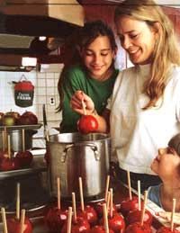

Robin Thomas
The Cahills strike again. We couldn't resist grabbing some photos of the apple authorities in action. Here, Grinny Cahill cooks up some candy apples with neighbor's grandkids Melissa (left) and Katelyn Foley.